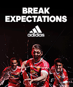
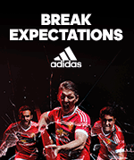

Season 2014-15
Sunday 13 May 2014
Man Utd 8 - 2 Arsenal
Tables
| # |
Team |
P |
Pts |
| 1 |
Man Utd |
38 |
89 |
| 2 |
Chelsea |
38 |
83 |
| 3 |
Liverpool |
38 |
68 |
| 4 |
Arsenal |
38 |
68 |
| 5 |
Spurs |
38 |
60 |
Early years (1878–1945)
Manchester United was formed in 1878 as Newton Heath LYR Football Club by the Carriage and Wagon department of the Lancashire and Yorkshire Railway (LYR) depot at Newton Heath. The team initially played games against other departments and rail companies, but on 20 November 1880, they competed in their first recorded match; wearing the colors of the railway company – green and gold – they were defeated 6–0 by Bolton Wanderers' reserve team By 1888, the club had become a founding member of The Combination, a regional football league. Following the league's dissolution after only one season, Newton Heath joined the newly formed Football Alliance, which ran for three seasons before being merged with the Football League. This resulted in the club starting the 1892–93 seasons in the First Division, by which time it had become independent of the rail company and dropped the "LYR" from its name. After two seasons, the club was relegated to the Second Division.
Four players, wearing dark shirts, light shorts and dark socks, are seated. Four more players are standing immediately behind them, and three more are standing on a higher level on the back row. Two men in suits are standing on either side of the players.
The Manchester United team at the start of the 1905–06 season, in which they were runners-up in the Second Division.
In January 1902, with debts of £2,670 – equivalent to £260,000 in 2015 – the club was served with a winding-up order; Captain Harry Stafford found four local businessmen, including John Henry Davies (who became club president), each willing to invest £500 in return for a direct interest in running the club and who subsequently changed the name; on 24 April 1902, Manchester United was officially born. Under Ernest Mangnall, who assumed managerial duties in 1903, the team finished as Second Division runners-up in 1906 and secured promotion to the First Division, which they won in 1908 – the club's first league title. The following season began with victory in the first ever Charity Shield and ended with the club's first FA Cup title. Manchester United won the First Division for the second time in 1911, but at the end of the following season, Mangnall left the club to join Manchester City.
In 1922, three years after the resumption of football following the First World War, the club was relegated to the Second Division, where it remained until regaining promotion in 1925. Relegated again in 1931, Manchester United became a yo-yo club, achieving its all-time lowest position of 20th place in the Second Division in 1934. Following the death of principal benefactor John Henry Davies in October 1927, the club's finances deteriorated to the extent that Manchester United would likely have gone bankrupt had it not been for James W. Gibson, who, in December 1931, invested £2,000 and assumed control of the club. In the 1938–39 season, the last year of football before the Second World War, the club finished 14th in the First Division.
 
